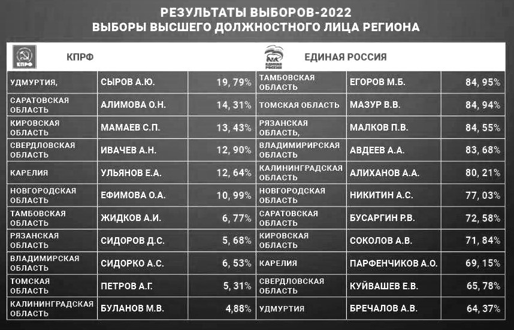

Карта телеграм-каналов Удмуртии
С 9 по 11 сентября 2022 года в Удмуртии проходили выборы главы республики и выборы в Госсовет Удмуртии. В итоге, около 75% мест в новом составе регионального парламента выиграла «Единая Россия»: она получила 51,07% голосов по партийным спискам и победила практически во всех одномандатных округах. КПРФ, ЛДПР и СРЗП получили в результате голосования по партийным спискам около 15,56%, 13,64% и 6,06% голосов соответственно. Выборы главы республики выиграл действующий глава региона, член партии «Единая Россия», А. Бречалов с 64,37% голосов, и 19.79% получил А. Сыров – представитель КПРФ, Т. Ягафаров (ЛДПР) — 9,79%, В. Белоусов (СРЗП) — 3,31%. Из всех выборов высших должностных лиц регионов в стране, А. Бречалов, как представитель «партии власти» набрал самый низкий процент голосов (Таблица 1).
Таблица 1

Несмотря на довольно тоскливые результаты выборов, предвыборная кампания на пост главы Удмуртии была интересной и относительно конкурентной. Главная борьба проходила между А. Бречаловым и А. Сыровым. Не углубляясь в подробности, коротко о них:
Единая Россия - Александр Бречалов: действующий глава республики, «варяг», по мнению «Минченко консалтинг», рейтинг политической устойчивости А. Бречалова, как главы региона, был крайне низким. Только в конце предвыборной кампании получил регистрацию в Ижевске.
КПРФ - Александр Сыров: депутат Гордумы Ижевска, предприниматель, в ноябре 2021 против него было заведено уголовное дело за неуплату налогов.
Помимо этого, избирательная кампания была заметна в разных социальных сетях: VK, Telegram, WhatsApp и Instagram (Meta признана экстремиской организацией в России LOL). Особо интересно было наблюдать за телеграм-каналами: разнозависимые и независимые удмуртские каналы критиковали того или иного кандидата на пост главы республики или распространяли компрометирующую информацию, использовали чёрный пиар и т.д. и т.п. Поэтому мне было очень интересно попытаться структурировать «шум» телеграм-каналов Удмуртии , и найти наиболее объективный источник информации. Также интересно было посмотреть, как часто каналы упоминали СВО во время предбвыборной борьбы.
С этой целью, основываясь на TGStat, я выбрала 34 популярных телеграм-канала Удмуртии, на которых подписаны не менее 400 аккаунтов.
Структура телеграм-каналов Удмуртии
Основные темы
Темы по каналам
Выводы
1. Сеть, построенная на основе респостов 34 удмуртских телеграм-каналов, позволяет найти оппозиционные каналы: чем дальше от правительственных каналов, тем вероятнее оппозиционность. Так, с большой уверенностью можно сказать, что каналы Это Щукин, Удмуртский баян, Удмуртские клоуны, Удмуртия против коррупции, Иван Елисеев, Голос Полушарий ГП, АНТОНОВ ПРОТИВ! являются оппозиционными. Во время предвыборной кампании они очень активно критиковали А. Бречалова. Например, Иван Елисеев, создатель канала Удмуртия против коррупции, призывал голосовать за всех, кроме Бречалова. Остальные писали о недостатках и провалах А. Бречалова, как действующего главы республики и участника избирательной кампании. В этой группе затесался господин Щукин, с энтузиазмом поддерживающий СВО в Украине. Он критиковал Бречалова за то, что во время «военного времени» он уделял недостаточно внимания СВО и военным заводам, которых в Удмуртии немало.
2. Интересно, что канал Оппозиция Удмуртии оказался достаточно далеко от группы ранее упомянутых оппозиционных каналов. Возможно, этот канал не представляет реальную оппозицию региона. В основном, он публиковал посты про избирательную кампанию и СВО.
3. Упомянутые ранее, предположительно оппозиционные, каналы больше всего писали про избирательную кампанию, также уделяли внимание судебным прениям, проблемам в области здравоохранения и СВО.
4. Любопытно, что А.Бречалов редко упоминал СВО во время кампании, можно сказать сторонился этой темы, в отличие от М. Егорова в Тамбовской области, где выборы были неконкурентными. Оговорюсь, что активная трансляция кандидатом месседжа государственных каналов не является причиной разгромной победы. Предположу, что чем сложнее регион, тем меньше упоминаний СВО и больше акцент на внутренней политике, реальных делах. В целом, эта тема не очень популярна в информационном пространстве Удмуртии.
5. Возвращаясь к сети. Наиболее объективными новостными каналами, пишущими о политике и цитируемыми оппозицией и провластными каналами кажутся LIFE 18 и Коммерсантъ-Удмуртия. Возможно, Udm-Info.